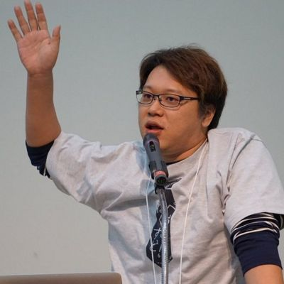
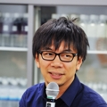
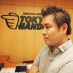

セッション内容
タイムテーブル
講演者名敬称略。
※スケジュールは一部調整中です。変更になる可能性があります。
| 10:00 – 10:10 | オープニング | |
|---|---|---|
| 10:10 – 11:10 | 60分 | レガシーコードの直し方（仮） 和田 卓人(タワーズ・クエスト株式会社) |
| 11:10 – 11:20 | 休憩 | |
| 11:20 – 11:50 | 30分 | (調整中) (調整中) |
| 11:50 – 12:10 | 20分 | スポンサーセッション 中山 博光(株式会社リゾーム) |
| 12:10 – 12:20 | 10分 | スポンサーセッション 山本 裕介(株式会社サムライズム) |
| 12:20 – 13:30 | 昼休憩 | |
| 13:30 – 14:00 | 30分 | データベースリファクタリング 曽根 壮大(株式会社はてな) |
| 14:00 – 14:30 | 30分 | (調整中) 阿部 正幸(株式会社KDDIウェブコミュニケーションズ) |
| 14:30 – 14:40 | 休憩 | |
| 14:40 – 15:40 | 60分 | 調整中 伊藤 直也(株式会社一休) |
| 15:40 – 15:50 | 休憩 | |
| 15:50 – 16:50 | 60分 | 調整中 武市 大志(株式会社日本経済新聞社) |
| 16:50 – 17:00 | 休憩 | |
| 17:00 – 18:00 | 60分 | 企業もインターネット中心のアーキテクチャにしよう 長谷川 秀樹(ハンズラボ株式会社) |
| 18:00 – 18:10 | クロージング |
講演者プロフィール
- レガシーシステムとの向き合い方（仮）
-
レガシーシステムの修繕/改良/刷新にはコツがあり、うまくいくパターン、いかないパターンがあることが分かってきました。本講演では、レガシーシステムと向き合い、改善を行っていく際に有効な考え方やプラクティスを説明していきます。
講演者プロフィール

和田 卓人
タワーズ・クエスト株式会社取締役社長
(調整中)
- (調整中)
-
(調整中)
講演者プロフィール

(調整中)
(調整中)
- スポンサーセッション
-
(調整中)
講演者プロフィール
中山 博光
株式会社 リゾーム 代表取締役社長
(調整中)
- スポンサーセッション
-
(調整中)
講演者プロフィール
山本 裕介
株式会社サムライズム 代表取締役社長
(調整中)
- データベースリファクタリング
-
(調整中)
講演者プロフィール
曽根 壮大
株式会社はてな セールスエンジニア
(調整中)
- (調整中)
-
(調整中)
講演者プロフィール

阿部 正幸
株式会社KDDIウェブコミュニケーションズ コミュニティ事業本部 エバンジェリスト部 エバンジェリスト
システム開発会社で、大規模なシステム開発を経験後、Web制作会社でプログラマー兼、ディレクターとして従事。その後、KDDIウェブコミュニケーションズに入社、CPIブランドのプロダクトマネージャーに就任。ACE01、SmartReleaseをリリース後、現職の「エバンジェリスト」として、Web制作に関する様々なイベントに登壇。
Drupal(g.d.o Japan)日本コミュニティー、HTML5 funなどに所属し、OSSを世に広げる活動や、Web制作に関する情報を発信している。
- (調整中)
-
(調整中)
講演者プロフィール
伊藤 直也
株式会社一休 執行役員CTO
ニフティ、はてな取締役CTO、グリー統括部長を経て2016年4月より株式会社一休 執行役員CTO。Kaizen Platform, Inc.、ハウテレビジョン技術顧問。著書に『入門Chef Solo』(達人出版会)『サーバ/インフラを支える技術』『大規模サービス技術入門』『Chef実践入門』 (技術評論社) など多数。
- (調整中)
-
(調整中)
講演者プロフィール
武市 大志
日本経済新聞社
慶応義塾大学総合政策学部卒。5年間のバンドマン時代を経て、Webシステム開発会社にて外国為替取引や株価取引サービスの開発に携わり、2014年日本経済新聞社入社。日経電子版アプリのリニューアルに携わり、現在はモバイル・アプリ開発全般のチームリーダーを務める。
- 企業もインターネット中心のアーキテクチャにしよう
-
レガシーから脱却してどこにいくのだろうか。間違いなくインターネット技術を中心に企業のシステムを組み替えていく必要がある。今回は、東急ハンズ（小売業企業）のIT変革の事例を中心に、レガシーから脱却した事例を紹介する。
講演者プロフィール
長谷川 秀樹
ハンズラボ株式会社 代表取締役社長
1994年、アクセンチュア株式会社に入社後、国内外の小売業の業務改革、コスト削減、マーケティング支援などに従事。2008年、株式会社東急ハンズに入社後、情報システム部門、物流部門、通販事業、オムニチャネル推進の責任者として改革を実施。デジタルマーケティング領域では、ツイッター、フェイスブック、コレカモネットなどソーシャルメディアを推進。2013年、ハンズラボ株式会社を立ち上げ、代表取締役社長に就任。